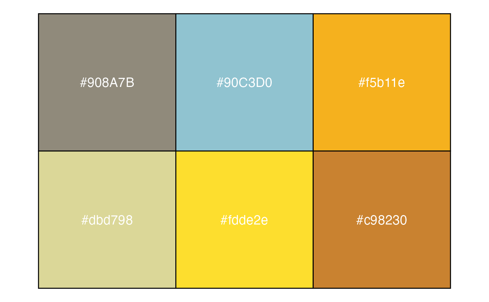

coralcolors
Readme.rmdcoralcolors

The coralcolors package provides color scales for plotting in R based on nature’s most stunning and colorful organisms: scleractinian corals.
#TeamCoral in its colorful glory.
Installation
library(devtools)
devtools::install_github("marineecologist/coralcolors", force = TRUE)Coralcolor Scales
library(coralcolors)To view the current list of coral taxa, use:
names(coral_palettes)## [1] "acanthastrea" "acropora1" "acropora2" "acropora3"
## [5] "acropora4" "australophyllia" "cyphastrea" "montipora"
## [9] "micromussa" "porites" "seriatopora" "symbiodinium"Use show_colors() to view color palettes:
show_colors(coral_palettes$acropora2)